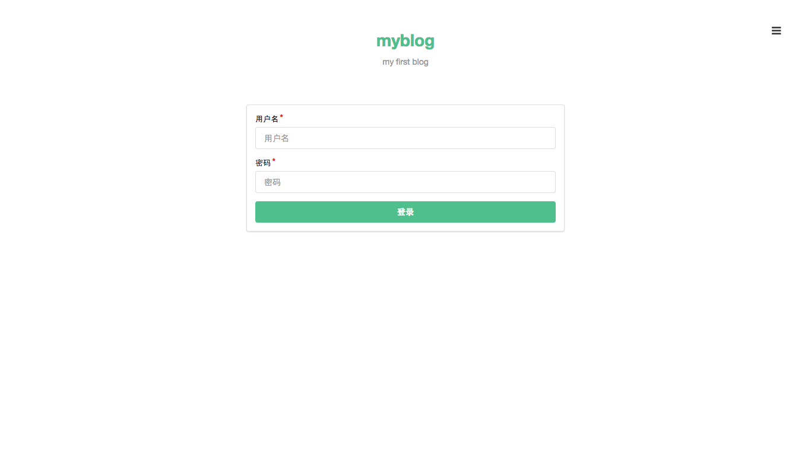
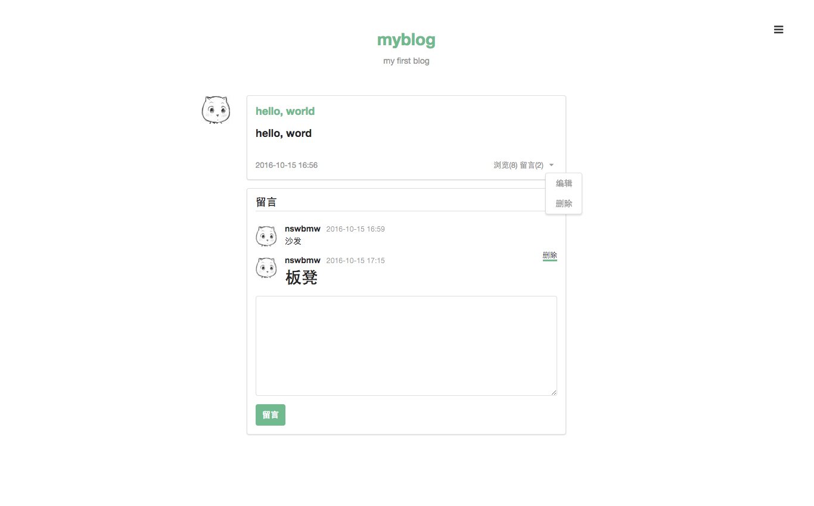
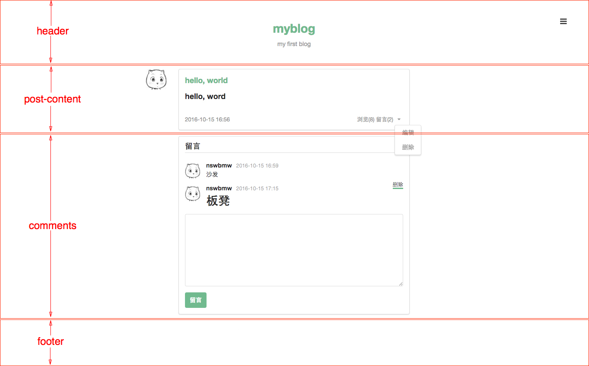

我们使用 jQuery + Semantic-UI 实现前端页面的设计，最终效果图如下:
注册页

登录页

未登录时的主页（或用户页）

登录后的主页（或用户页）
发表文章页

编辑文章页

未登录时的文章页
登录后的文章页

通知


4.5.1 组件
前面提到过，我们可以将模板拆分成一些组件，然后使用 ejs 的 include 方法将组件组合起来进行渲染。我们将页面切分成以下组件：
主页
文章页

根据上面的组件切分图，我们创建以下样式及模板文件：
public/css/style.css
/* ---------- 全局样式 ---------- */
body {
width: 1100px;
height: 100%;
margin: 0 auto;
padding-top: 40px;
}
a:hover {
border-bottom: 3px solid #4fc08d;
}
.button {
background-color: #4fc08d !important;
color: #fff !important;
}
.avatar {
border-radius: 3px;
width: 48px;
height: 48px;
float: right;
}
/* ---------- nav ---------- */
.nav {
margin-bottom: 20px;
color: #999;
text-align: center;
}
.nav h1 {
color: #4fc08d;
display: inline-block;
margin: 10px 0;
}
/* ---------- nav-setting ---------- */
.nav-setting {
position: fixed;
right: 30px;
top: 35px;
z-index: 999;
}
.nav-setting .ui.dropdown.button {
padding: 10px 10px 0 10px;
background-color: #fff !important;
}
.nav-setting .icon.bars {
color: #000;
font-size: 18px;
}
/* ---------- post-content ---------- */
.post-content h3 a {
color: #4fc08d !important;
}
.post-content .tag {
font-size: 13px;
margin-right: 5px;
color: #999;
}
.post-content .tag.right {
float: right;
margin-right: 0;
}
.post-content .tag.right a {
color: #999;
}
views/header.ejs
<!DOCTYPE html>
<html>
<head>
<meta charset="utf-8">
<title><%= blog.title %></title>
<link rel="stylesheet" href="//cdn.bootcss.com/semantic-ui/2.1.8/semantic.min.css">
<link rel="stylesheet" href="/css/style.css">
<script src="//cdn.bootcss.com/jquery/1.11.3/jquery.min.js"></script>
<script src="//cdn.bootcss.com/semantic-ui/2.1.8/semantic.min.js"></script>
</head>
<body>
<%- include('components/nav') %>
<%- include('components/nav-setting') %>
<%- include('components/notification') %>
views/footer.ejs
<script type="text/javascript">
// 点击按钮弹出下拉框
$('.ui.dropdown').dropdown();
// 鼠标悬浮在头像上，弹出气泡提示框
$('.post-content .avatar').popup({
inline: true,
position: 'bottom right',
lastResort: 'bottom right',
});
</script>
</body>
</html>
注意：上面
<script></script>是 semantic-ui 操控页面控件的代码，一定要放到 footer.ejs 的</body>的前面，因为只有页面加载完后才能通过 JQuery 获取 DOM 元素。
在 views 目录下新建 components 目录用来存放组件，在该目录下创建以下文件：
views/components/nav.ejs
<div class="nav">
<div class="ui grid">
<div class="four wide column"></div>
<div class="eight wide column">
<a href="/posts"><h1><%= blog.title %></h1></a>
<p><%= blog.description %></p>
</div>
</div>
</div>
views/components/nav-setting.ejs
<div class="nav-setting">
<div class="ui buttons">
<div class="ui floating dropdown button">
<i class="icon bars"></i>
<div class="menu">
<% if (user) { %>
<a class="item" href="/posts?author=<%= user._id %>">个人主页</a>
<div class="divider"></div>
<a class="item" href="/posts/create">发表文章</a>
<a class="item" href="/signout">登出</a>
<% } else { %>
<a class="item" href="/signin">登录</a>
<a class="item" href="/signup">注册</a>
<% } %>
</div>
</div>
</div>
</div>
views/components/notification.ejs
<div class="ui grid">
<div class="four wide column"></div>
<div class="eight wide column">
<% if (success) { %>
<div class="ui success message">
<p><%= success %></p>
</div>
<% } %>
<% if (error) { %>
<div class="ui error message">
<p><%= error %></p>
</div>
<% } %>
</div>
</div>
4.5.2 app.locals 和 res.locals
上面的模板中我们用到了 blog、user、success、error 变量，我们将 blog 变量挂载到 app.locals 下，将 user、success、error 挂载到 res.locals 下。为什么要这么做呢？app.locals 和 res.locals 是什么？它们有什么区别？
express 中有两个对象可用于模板的渲染：app.locals 和 res.locals。我们从 express 源码一探究竟：
express/lib/application.js
app.render = function render(name, options, callback) {
...
var opts = options;
var renderOptions = {};
...
// merge app.locals
merge(renderOptions, this.locals);
// merge options._locals
if (opts._locals) {
merge(renderOptions, opts._locals);
}
// merge options
merge(renderOptions, opts);
...
tryRender(view, renderOptions, done);
};
express/lib/response.js
res.render = function render(view, options, callback) {
var app = this.req.app;
var opts = options || {};
...
// merge res.locals
opts._locals = self.locals;
...
// render
app.render(view, opts, done);
};
可以看出：在调用 res.render 的时候，express 合并（merge）了 3 处的结果后传入要渲染的模板，优先级：res.render 传入的对象> res.locals 对象 > app.locals 对象，所以 app.locals 和 res.locals 几乎没有区别，都用来渲染模板，使用上的区别在于：app.locals 上通常挂载常量信息（如博客名、描述、作者信息），res.locals 上通常挂载变量信息，即每次请求可能的值都不一样（如请求者信息，res.locals.user = req.session.user）。
修改 index.js，在 routes(app); 上一行添加如下代码：
// 设置模板全局常量
app.locals.blog = {
title: pkg.name,
description: pkg.description
};
// 添加模板必需的三个变量
app.use(function (req, res, next) {
res.locals.user = req.session.user;
res.locals.success = req.flash('success').toString();
res.locals.error = req.flash('error').toString();
next();
});
这样在调用 res.render 的时候就不用传入这四个变量了，express 为我们自动 merge 并传入了模板，所以我们可以在模板中直接使用这四个变量。
上一节：4.4 功能设计
下一节：4.6 连接数据库